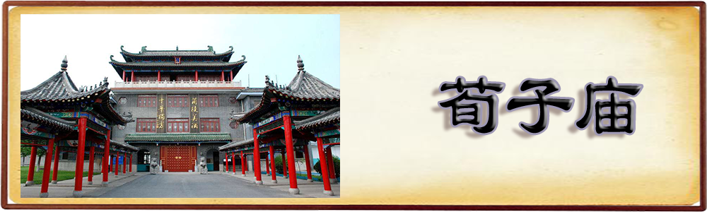

|  |
荀子庙位于山东省临沂市兰陵县兰陵镇驻地东南1000米，1977年被列为省级重点文物保护单位。近年来，为弘扬传承荀子思想，兰陵县聘请山东省旅游规划设计学院、上海同济大学等院校的专家对荀子庙进行了高标准规划，按照规划全面实施了荀子庙重修工程，在原有荀子庙基础上，建设荀子墓园、祭祀区、石仪区、观水区、停车服务区等五大部分，总建筑面积7.7万平方米，总投资2300万元,成为重要的荀子文化旅游圣地。
荀子庙位于兰陵镇驻地东南1000米处，运女河的西岸，在1977年，荀子墓被公布为省级重点文物保护单位。现为国家AAA级旅游景区。近年来，我县高度重视荀子文化的开发与挖掘工作，先后聘请了山东省旅游规划设计学院、上海同济大学等院校的专家对荀子庙进行了高标准的规划。荀子庙于2011年2月动工修建，总建筑面积7.7万平方米，总投资是2600万，主要建有荀子墓园景区、祭祀区、石仪区、观水区、停车服务中心五大部分。
三大牌坊区：博雅坊、知明坊、长青坊。
巨擘门：荀子两任兰陵令，去官后在兰陵传经授徒，整理一生的言论著述，把中国传统文化的根基扎在了兰陵，开创了“兰陵多学”的伟大基业。没有荀子就没有兰陵文化；没有荀子，就没有兰陵在中国历史上的巨大影响力。梁启超认为荀子为中国社会学之巨擘。故以“巨擘”名之。
荀子墓：墓为黄土堆积，东西长30米，南北宽20米，封土高3米，黄粘土夯筑，1966～1976年的文化大革命期间，墓地遭破坏，墓冢封土中部挖一深坑，呈M状。1977年被列为山东省第一批省级重点文物保护单位，并立有保护标志碑一方。
后圣殿：东西长36米，南北宽19米，高13.6米。荀子庙主体建筑。清末民初著名学者章太炎认为，孔子之后最能代表儒家发展创新的人物是荀子，推荀子为“后圣”。 劝学广场：东西长90米，南北宽50米。典出荀子《劝学》篇。荀子庙的祭祀区。
| @2018，版权所有：儒家文化 |